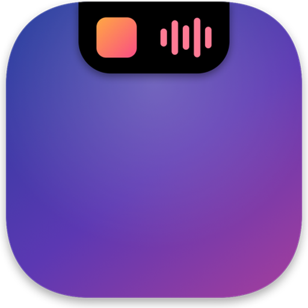
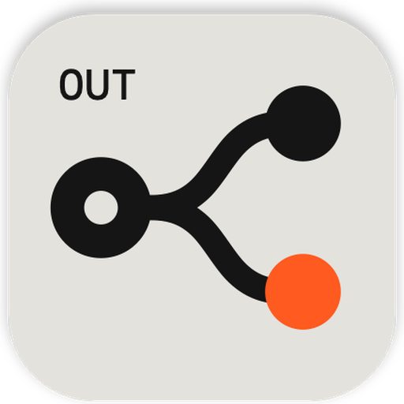
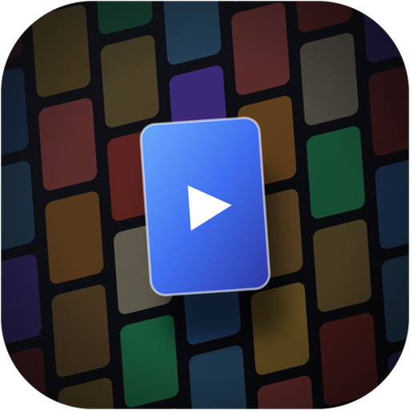

Click the island or try:
NotchIsland
Dynamic Island for MacBooks with a notch
Your notch becomes a living island: music, notifications, timers, files and your coding agents, right where your eyes already are.
- Music from Apple Music, Spotify and the browser, with a live equalizer and a glow around the island.
- AI agents: see what Claude Code and Codex are doing, and when they need your permission.
- Notifications for charging, AirPods, network and VPN, plus a compact volume bar.
- Shelf: a file tray with AirDrop, clipboard history and a quick note.
- Stats: CPU, memory, temperatures and power draw, one swipe away.